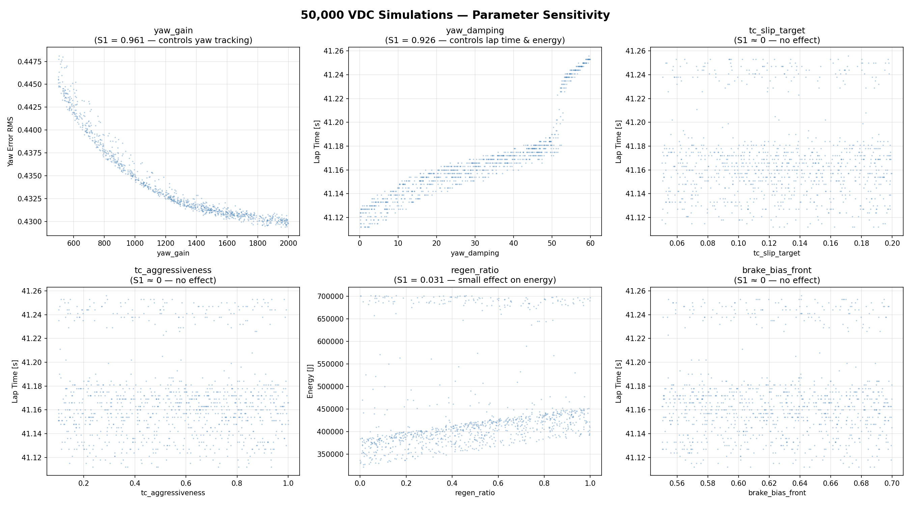
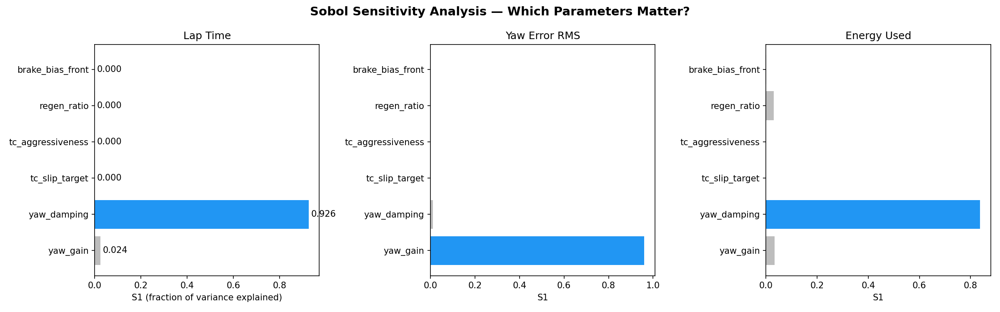
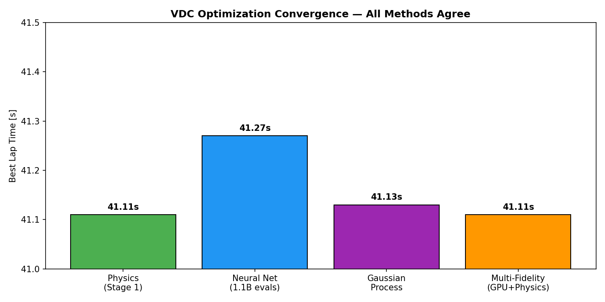
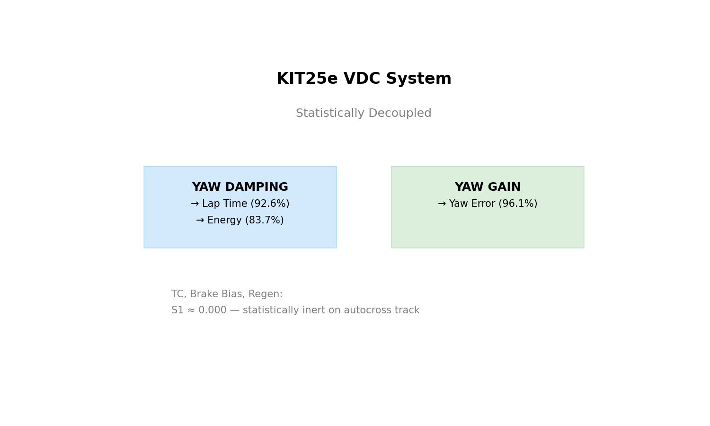

HPC-based vehicle dynamics framework validated on KIT25e
| Parameter | Value | Importance |
|---|---|---|
| yaw_gain | 1500 | Controls yaw tracking (96.1%) |
| yaw_damping | 60 (MAX) | Controls lap time (92.6%) & energy (83.7%) |
| tc_slip_target | 0.08 | Inert — don't waste time tuning |
| tc_aggressiveness | 0.17 | Inert |
| regen_ratio | 0.97 | Minor energy effect (3.1%) |
| brake_bias | 0.58 | Inert |
| Test | KIT25e Actual | Model | Error |
|---|---|---|---|
| Skidpad | 5.14s | 5.20s | +1.2% |
| Acceleration 0-75m | 3.57s | 3.76s | +5.3% |
Intel Xeon Gold 6338 (792 cores) · NVIDIA V100/A100 GPUs · 3TB RAM nodes
Cost: $0 — idle academic cluster




GitHub Repository · Sobol Analysis · Surrogate Models · Recommendation
Built for KA-RaceIng · KIT Karlsruhe · Formula Student